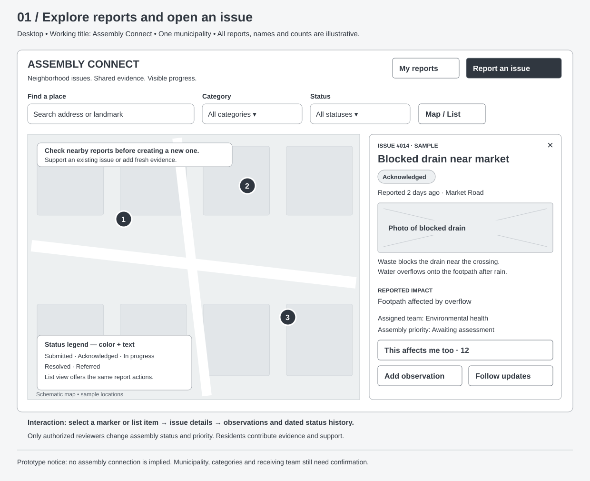
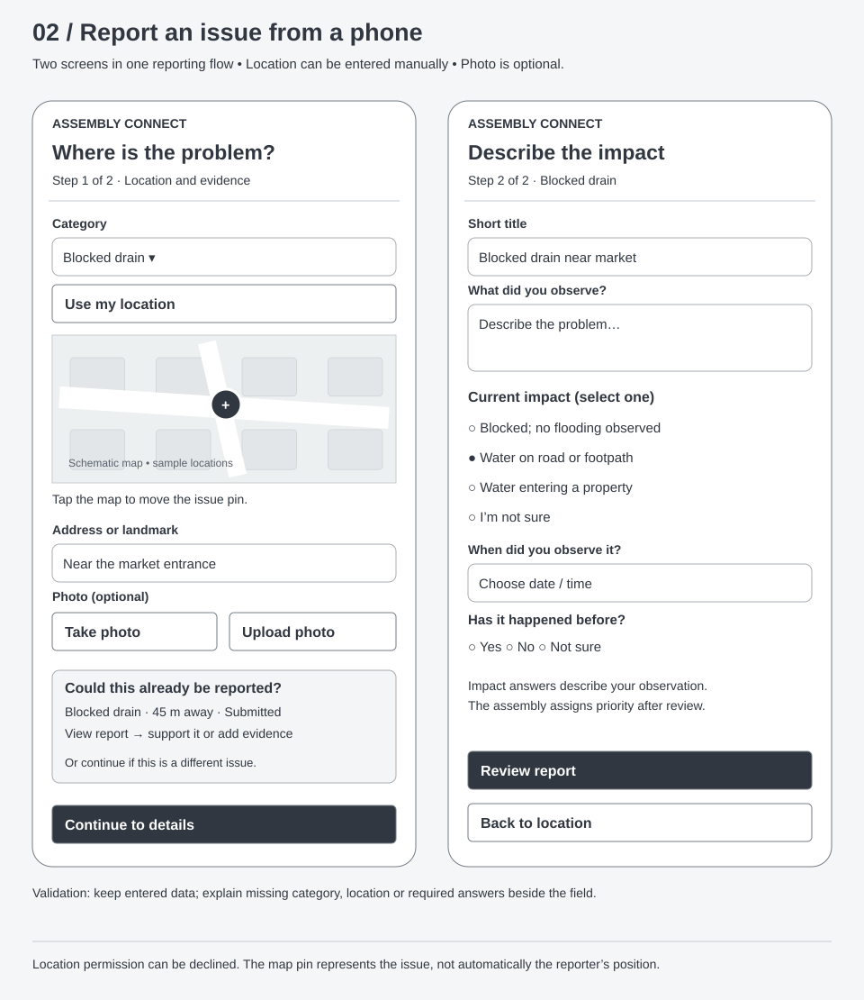
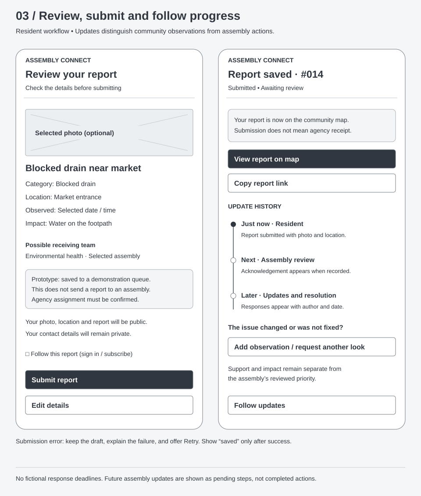
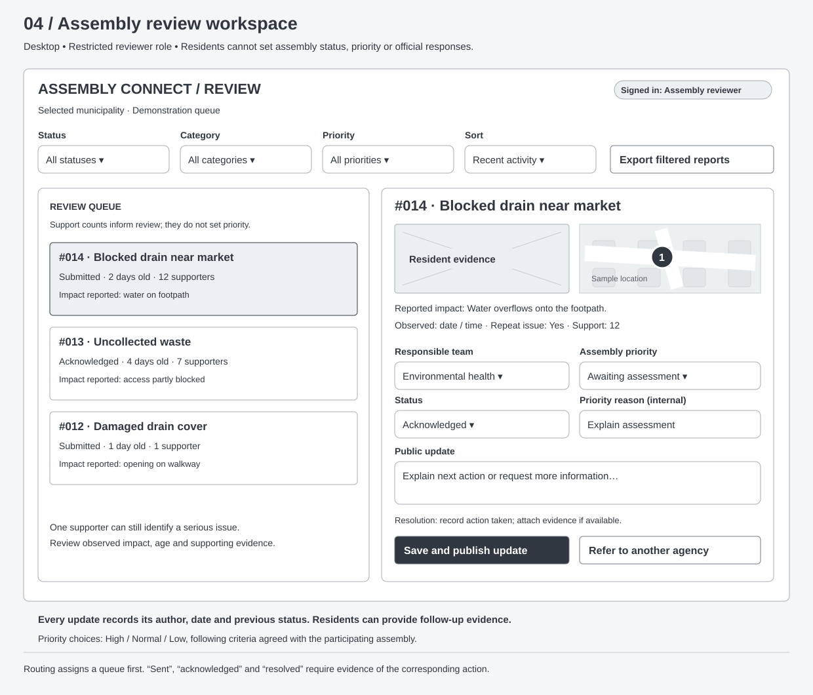

1. Browse reports and inspect an issue
Search or filter a map and list. Open a report to inspect its evidence, support it, contribute an observation, or follow updates.



2. Report a problem from a phone
Confirm the issue location and check for an existing report. Add a photo if useful, then answer short questions about observed impact.



3. Review, submit and follow progress
Check the report before submitting. After a successful save, receive a report reference and a link to its history. Later updates identify who recorded them and when.



4. Review reports as assembly staff
Use a restricted queue to review evidence, assign a team and priority, and publish an update. Community support does not automatically determine priority.
